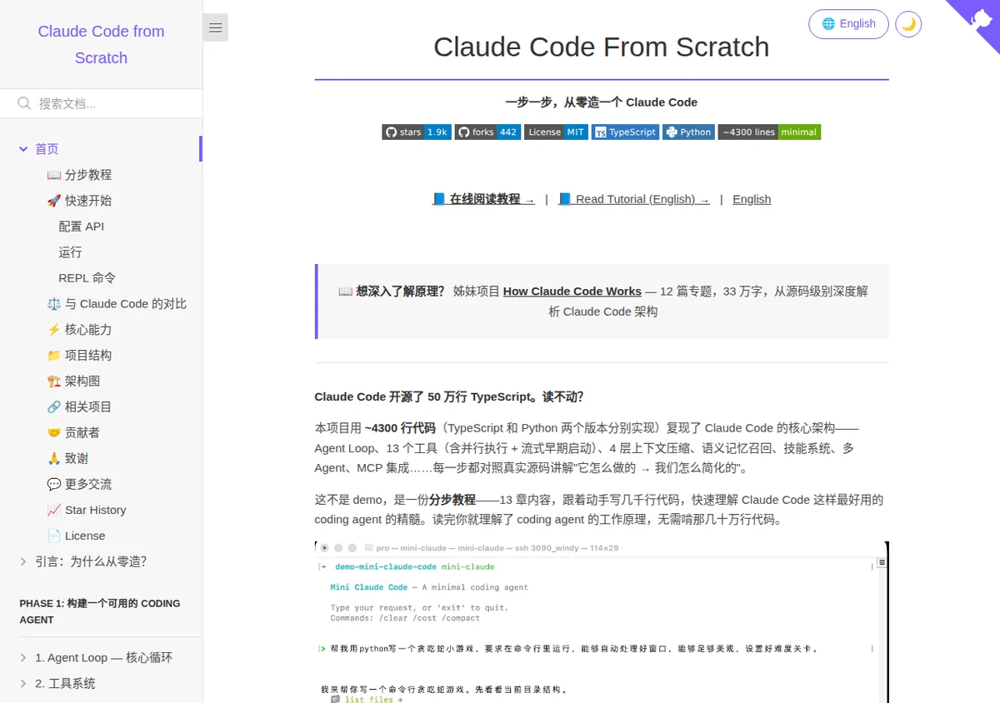

Claude Code From Scratch：把 50 万行源码压成 4300 行的可动手教程
这不是一本只让你“看懂概念”的电子书，而是把 Claude Code 的核心架构拆成一章一章能跑起来的教程：从 Agent Loop、13 个工具、4 层上下文压缩，到语义记忆、技能系统、多 Agent 和 MCP 集成，全部对照真实源码讲“它怎么做，我们怎么简化”。

先给结论：这是“读源码前的最好入口”，不是普通的电子书推荐
它的价值不在于“又写了一个编码助手”，而在于把 Claude Code 的复杂架构压缩成可手写、可对照、可复现的教程。
Claude Code From Scratch 很适合想快速理解 coding agent 底层原理的人：它用极少的代码把真实 Claude Code 的工作方式拆成教学步骤，你不必先啃完 50 万行源码，也能先把关键骨架看明白。
它为什么值得看
它把“看源码”变成“写源码”：每一步都和真实实现对照，让你能看见 agent loop、工具调用、上下文压缩和记忆召回是怎么落地的。
它的真正卖点
不是功能多，而是抽象得准：把一个大系统的关键路径收束成分步教程，适合建立编码代理的整体心智模型。
它把 Claude Code 拆成了哪些核心层
README 明确提到的关键架构点，基本都围绕“一个 coding agent 如何稳定工作”展开。
工具系统
13 个工具，外加并行执行与流式早期启动，重点讲“何时调用、如何串起来”。
上下文管理
4 层上下文压缩 + 大结果持久化，解决长对话里的噪声和 token 膨胀。
扩展能力
语义记忆召回、技能系统、多 Agent、MCP 集成，把单体 agent 变成可扩展系统。
章节组织：主线 13 章 + 测试章，按“先可用，再增强”推进
这本书的结构非常适合跟着动手做，不是只看概念堆叠。
Phase 1｜先造出一个可用的 Coding Agent
- Agent Loop：先跑起来，再谈优化
- 工具系统：把能力拆成 13 个可调用工具
- System Prompt：提示词与 @include 组织方式
- CLI 与会话：REPL、Ctrl+C、会话持久化
- 流式输出：双后端、流式工具执行、并行执行
- 权限与安全：模式、规则、危险检测
- 上下文管理：压缩与长结果持久化
Phase 2｜补上进阶能力
- 记忆系统：类型、召回与异步预取
- 技能系统：发现、inline / fork 双模式
- Plan Mode：只读规划与审批工作流
- 多 Agent：Sub-Agent 的 fork-return 架构
- MCP 集成：通过 stdio 连接外部工具
- 架构对比：完整对照官方 Claude Code
- 功能测试：19 项手动测试覆盖主功能
这本书适合谁
如果你的目标是理解 coding agent 的底层工作原理，它的命中率很高。
适合
不太适合
页面结构证据：它本身就像一份可执行的技术手册
首屏、目录、章节导航、终端示例和对照表共同说明：这不是博客，而是教学型工程文档。
左侧目录树直接提示这是“分步教程”而不是单篇文章。
从这张图能读出的事实
阅读建议与边界
把它当成“理解 Claude Code 的入口”，价值最高。
推荐阅读顺序
先看 README 的章节总览，再从 Phase 1 顺着 Agent Loop → 工具系统 → 上下文管理走一遍，最后再看记忆、技能、多 Agent 和 MCP。
最佳使用方式
边读边跑，尽量把每章当成一个小实验。你会比单纯浏览更快形成 coding agent 的整体心智模型。